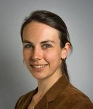

Science School on Quantitative Ecology
üìÖDate: 28.09.2024 - 23.09.2024 (Monday to Saturday)
üó∫Ô∏èLocation: Seminar House of the University of Bayreuth in Wallenfels, Germany
üë•Who can apply: Master and PhD students of ecology or a field closely related to ecology
üìùRegistration Deadline: to-be-annouced; watch this space!
Welcome!

Nowadays, the trend in ecology goes to open-access data which are thanks to ongoing digitalisation quite big. Hence, we believe that handling big data adequately and being able to analyse it with rigourous quantitative methods are essential skills to finish your studies in ecology successfully and to pursue a career in ecology. That’s why in 2024, we are offering for the first time a joint science school between the Charles University in Prague (CZ) and the University of Bayreuth (GER) on Quantitative Ecology for master as well as PhD students. This website will be used as official communication tool. Right now, you can find the first preliminary information on the event and how to sign up for it. At a later stage, we will publish a detailed schedule and materials here.
At the end of the course, students can
- name and make use of different open-access databases containing various ecological and environmental data.
- handle and pre-process all kind of big datasets more efficiently using the programming language R.
- explain the purpose of and implement various up-to-the-minute analysis and modelling methods in different subdisciplines of ecology (e.g. Biogeography, Evolutionary Ecology, Paleoecology) using the programming language R.
- judge if chosen methods were appropriate.
- develop their own scientific hypotheses and test them with appropriate methodology in a reproducible manner.
- call students from other universties their new friends. :)
To achieve the stated objectives, different instructors, who are doing research in various subdisciplines of ecology (e.g. Biogeography, Evolutionary Ecology, Paleoecology), will prepare theoretical and practical input for the participants. The different topics will be centered around current research projects of the instructors, and practical exercises will be executed in R. Additionally, social events, e.g. barbecue, will offer participants the chance to make new contacts.
- You are a master or PhD student of ecology or a field closely related to ecology.
- You know the basics in R.
- You’re knowledge of English is sufficient to follow the lectures and actively involve in group work.
Deadline: 15.07.2024
- If you are a student of the Charles University in Prague (CZ), please contact Ondřej Mottl (ondrej.mottl(at)gmail.com).
- If you are a student of the University of Bayreuth (GER), please contact Manuel Steinbauer (manuel.steinbauer(at)uni-bayreuth.de) and Franka Gaiser (franka.gaiser(at)uni-bayreuth.de).
- If you are a student from another institution please send a short CV, letter of motivation (max. 1 page) and current enrollment certificate to all three of us.
Meet the Team
Organising Team
Franka Gaiser 
- PhD Student in Quantitative Ecology
- üè¶University of Bayreuth, Bayreuth, Germany
- üì¨email: franka.gaiser(at)uni-bayreuth.de

- üîópersonal webiste
Antonin Machač 
- Leader of Research Group in Evolution and Biogeography
- üè¶IMIC Czech Academy of Sciences, Prague, Czech Republic
- üì¨email: A.Machac(at)email.cz

- üîópersonal webiste
Ondřej Mottl 
- Assistant Professor for Plant Ecology
- üè¶Department of Botany, Faculty of Science, Charles University, Prague, Czech Republic
- üì¨email: ondrej.mottl(at)gmail.com

- üîópersonal webiste
Manuel Steinbauer 
- Professor for Sport Ecology
- üè¶Bayreuth Center of Ecology and Environmental Research, University of Bayreuth, Bayreuth, Germany
- üì¨email: manuel.steinbauer(at)uni-bayreuth.de

- üîópersonal webiste
Instructors
Gregor Mathes 
- Postdoctoral Fellow in Analytical Paleontology
- üè¶University of Zurich, Zurich, Switzerland

Anna Walentowitz 
- Postdoctoral Fellow in Biogeography
- üè¶University of Bayreuth, Bayreuth, Switzerland